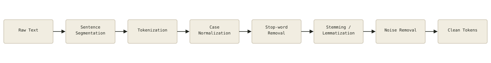
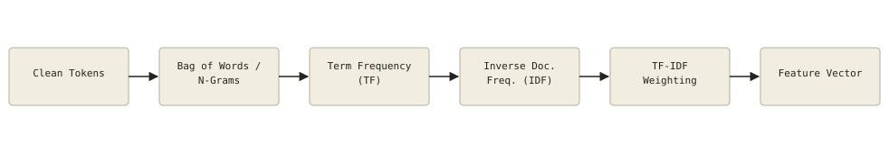
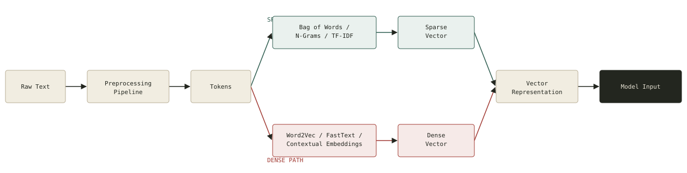

Complete Text Preprocessing Pipeline
Raw text passes through eight ordered stages before it is considered "clean" and ready for feature engineering. Order matters — segmentation and tokenization must happen before normalization or removal steps can operate on individual words.

Feature Engineering Pipeline
Once tokens are clean, they are counted and weighted into numeric features. Bag of Words / N-Grams supply raw counts; TF and IDF are combined into TF-IDF, the most common classical feature weighting scheme.

Text-to-Vector Transformation Process
Zoomed out, every technique in this repository is one of two forks after preprocessing: a sparse path (Bag of Words, N-Grams, TF-IDF — counting-based, high-dimensional, mostly zeros) or a dense path (Word2Vec, FastText, contextual embeddings — learned, low-dimensional, semantically packed). Both forks converge on the same destination: a numeric vector a model can consume.
